各式各样的self-attention
参考：李宏毅老师的各式各样的Attention
self-attention只是模型的一部分。只有当输入向量维度过大时候，加速、优化self-attention才起作用。
简要介绍
一个长度为N的句子，会得到N个key和N个query。
然后两两做dot-product，得到attention matrix。
然后再用attention matrix对value做weight sum。
痛点在于计算这个N×N的attention matrix计算量可能会非常惊人。
所以有一系列方法加速这个计算过程。
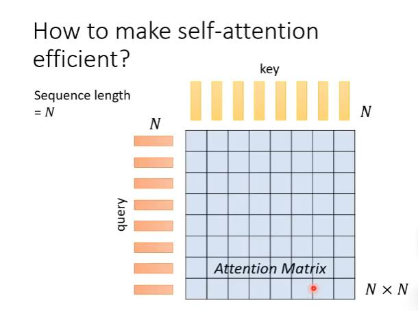
人为设定优化
由于大矩阵计算占用大量资源，于是如何矩阵也是一种优化self-attention的方法。
local attention/truncated attention
在self attention如果我们只看邻居，那我们就能把很远的地方的值设为0。
缺点：只能看到小范围的数值，跟CNN很像。
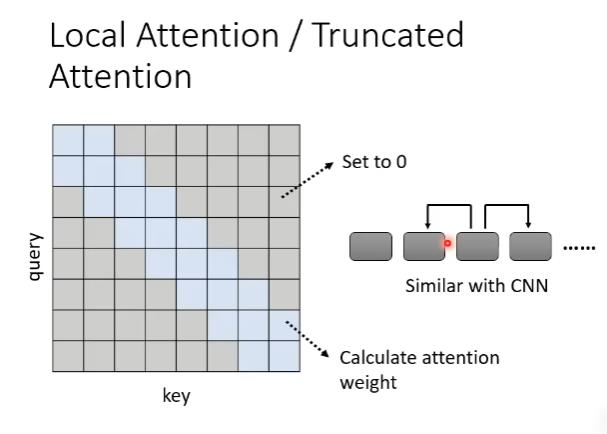
stride attention
类似于local-attention，但是间隔更大。
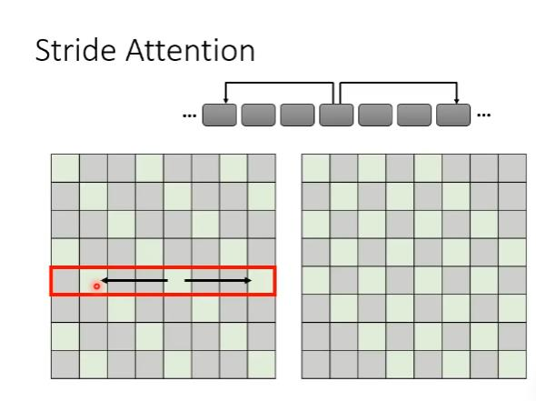
global attention
以上都是以某个位置为中心看左右的事情，如果我们关心整个sequence，那么我们可以用global attention。我们可以加入一个特殊token到原始的sequence里面。在这里，global attention会做两件事情：
（1）每个特殊的token都加入每一个token，收集全局信息。
（2）每个特殊的token都被其他所有的token加入，以用来获取全局信息。
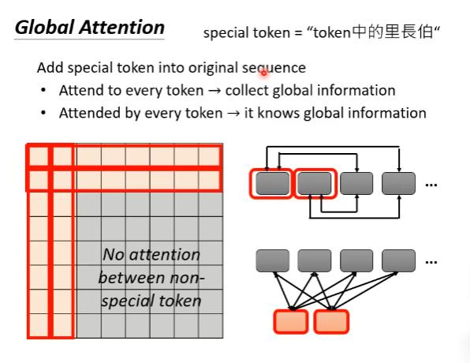
混合
上面提到了三种选择，我们选择哪一种呢？小孩子才做选择，我们都选择。
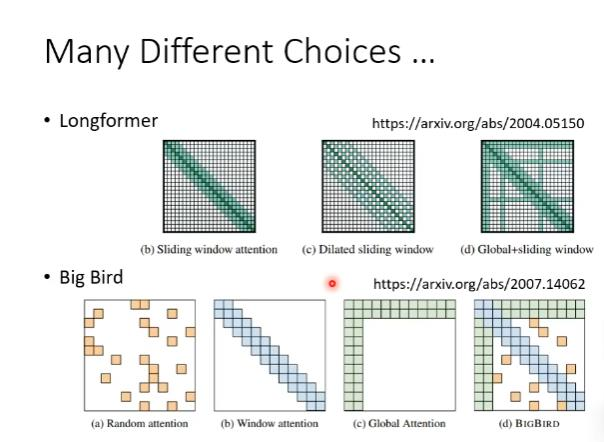
data-driven方式
将较小值取0
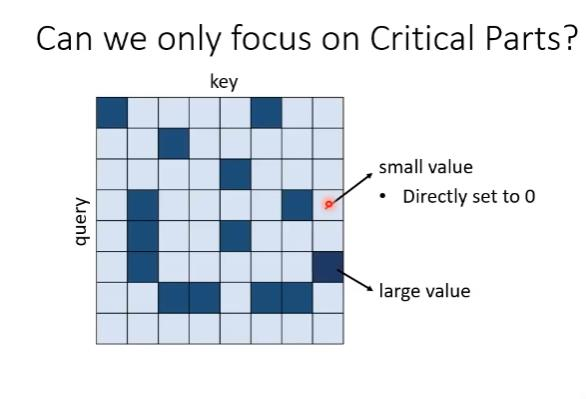
聚类
Reformer和routing transformer用了类似的方法。
第一步先把query和key聚类。
聚类的计算可以用近似（approximate）但快速（fast）的方式，从而加快计算。Reformer和routing transformer就采用了不同的clustering方式来加速计算。
聚类完后，我们只计算归为同一个类别的query和key之间的attention score，其他位置的attention score直接设置为0。
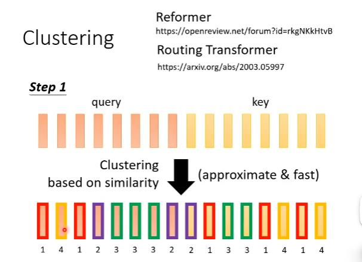
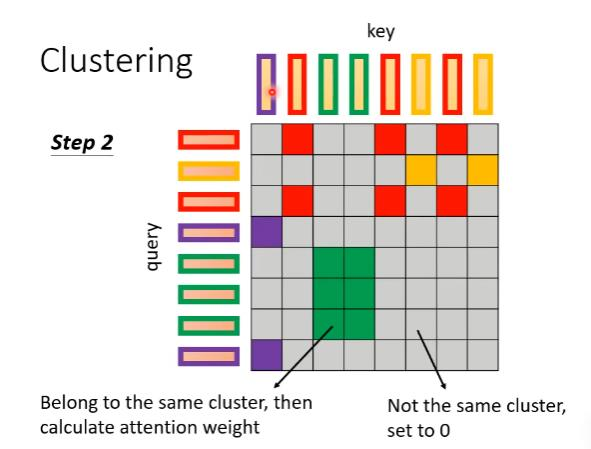
自动设定优化
我们能不能学习attention matrix哪块需要，哪块不需要吗？或者说能不能学习attention weight呢？
Sinkhorn Sorting Network
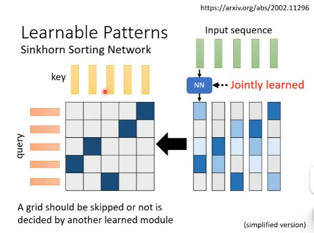
Sinkhorn Sorting Network做法是learn另外一个network来决定这个1-0矩阵。
新的network会input一个sequence，sequence中每个位置的vector都输出一个跟sequence长度一致的vector。Sequence中每个位置都产生一个vector，拼起来就产生一个N×N的矩阵。然后将这个矩阵通过某种计算变成一个1-0矩阵，并且保证这个计算过程可以微分。
产生1-0矩阵的计算和整个self-attention是jointly learned的。
当然也可以选择top-k方法，而不是top-1。
疑问：用了一个NN，真的比不用NN直接计算所有矩阵运算量小吗？
答：不一定的。所以Sinkhorn Sorting Network会将输入的向量划分为几个部分，各个部分共用一个经过NN产生的向量。
linformer
attention matrix有很多redundant columns ，研究者计算attention matrix的rank发现是低rank的（低秩的）。
那我们能不能去掉重复，产生小的attention matrix，加快attention的速度呢？
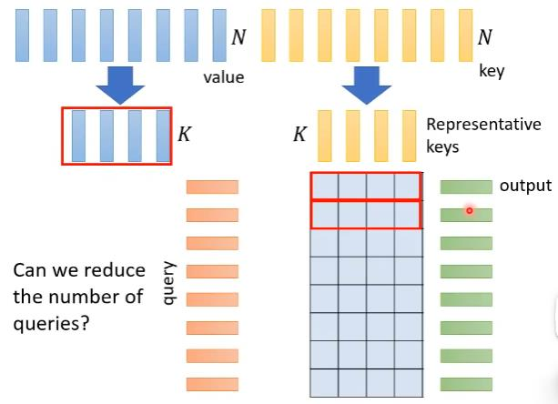
具体做法
挑出K个有代表性的key（黄色vectors），然后计算出N×K的matrix，然后再挑出K给有代表性的value（蓝色vectors）。然后把K个key（黄色vectors）对第一个query算出来的attention weight（红色框）对这个K个value（蓝色vectors）做weighted sum得到self-attention的output（绿色vector）。
疑问：但是，为什么我们选择有代表性的keys而不选有代表性的queries？
答：因为如果query减少了，output sequence length也会变小。这种做法对于sequence中每个位置都需要output的情况是不适用的。
如何挑选代表性的keys
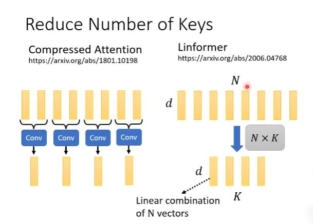
Compressed Attention是用CNN扫过整个句子，得到较短的output当作有代表性的keys。
Linformer是直接乘上N×K矩阵，做线性变化。
加速self-attention计算
self-attention 运算过程
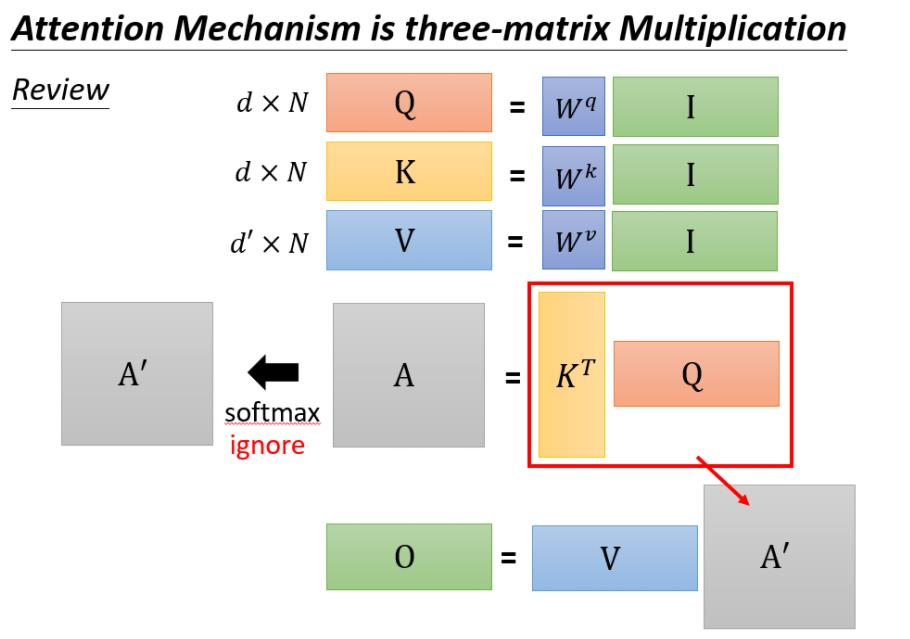
我们暂时忽略softmax后，输出O可以当成是三个矩阵相乘。
简单的加速
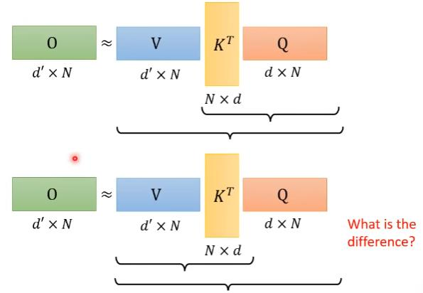
将上面的运算过程变成下面的运算过程。
上面的运算过程乘法次数为$（d+d’）N^2$
下面的运算过程乘法次数为$2d’dN$
我们再把softmax放回。
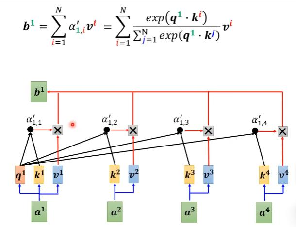
上图为原先的。
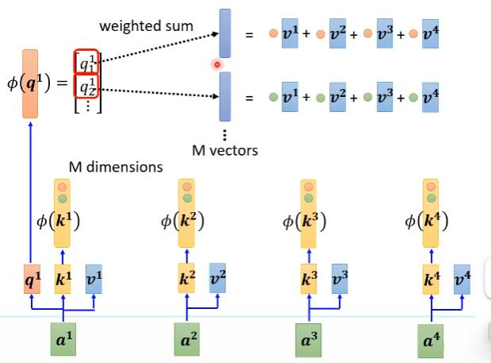
上图为变换顺序后的。
其中$exp(\mathbf{q}·\mathbf{k})\approx\phi(\mathbf{q})·\phi(\mathbf{k})$
具体数学推导见李宏毅原视频。
$\phi$的确定
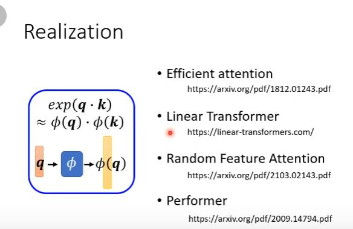
Synthesizer
不用q和v，直接学attention matrix
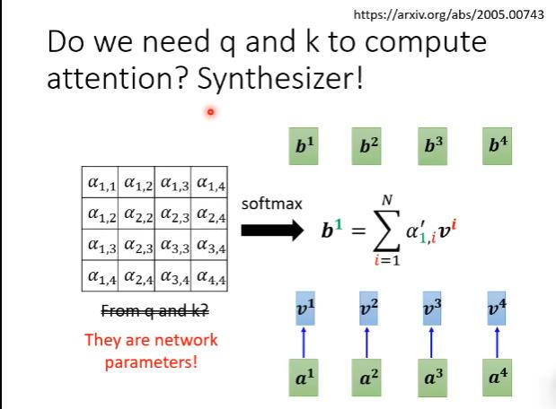
把它当成网络里的参数
丢掉self-attention
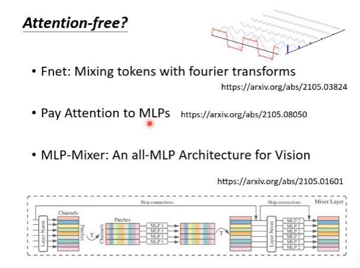
总结
LRA score表示方法越好，圈圈的大小代表需要用的memory大小
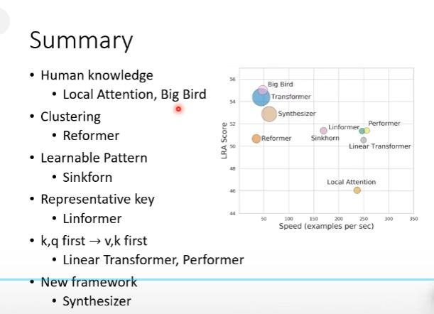